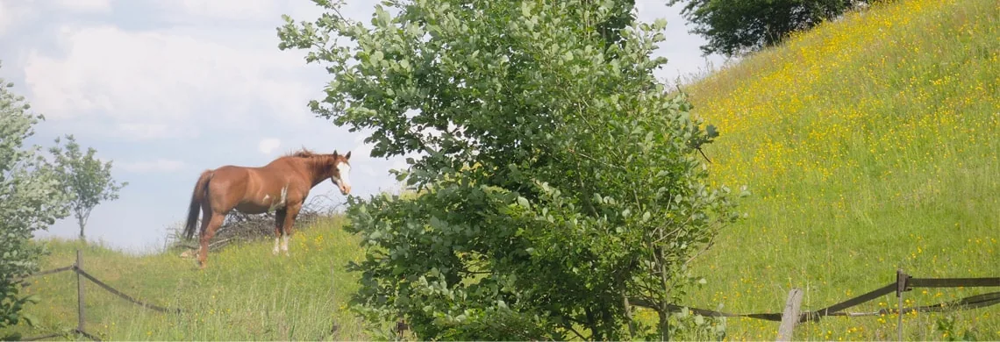

Two quiet cottages between meadow and forest
On the hill above Varsberg, at the place called Vogelsgesang, “birdsong”. Two hectares of meadows at the edge of the forest, footpaths starting from the garden, and a terrace for each cottage.


A place that lives up to its name
Our two cottages occupy the ground floor of a spacious house, in the heart of a vast two-hectare estate of green meadows at the edge of the forest, in an exceptional spot known as “Vogelsgesang”, birdsong.
Typical of the Lorraine countryside, the surroundings are lush and offer a beautiful panorama in a setting of calm and serenity.
Two twin houses, the same view
The same comforts on both sides. Book one, or both for a large family.
Book direct
No commission, with a reply within 24 hours. Linen provided, beds made on arrival, end-of-stay cleaning included.
On foot from the garden, or an hour’s drive
Hiking trails without crossing a road, a lake and water-sports centre 3 km away, and Metz, the Saar and Luxembourg within a day trip.
3 km

12 km

15 km

30 km

40 km

47 km

Agnès and Marc welcome you
Gîtes de France (3 ears of corn) since 2016, Clévacances and Tourisme & Handicap labels. We speak French, English and German.